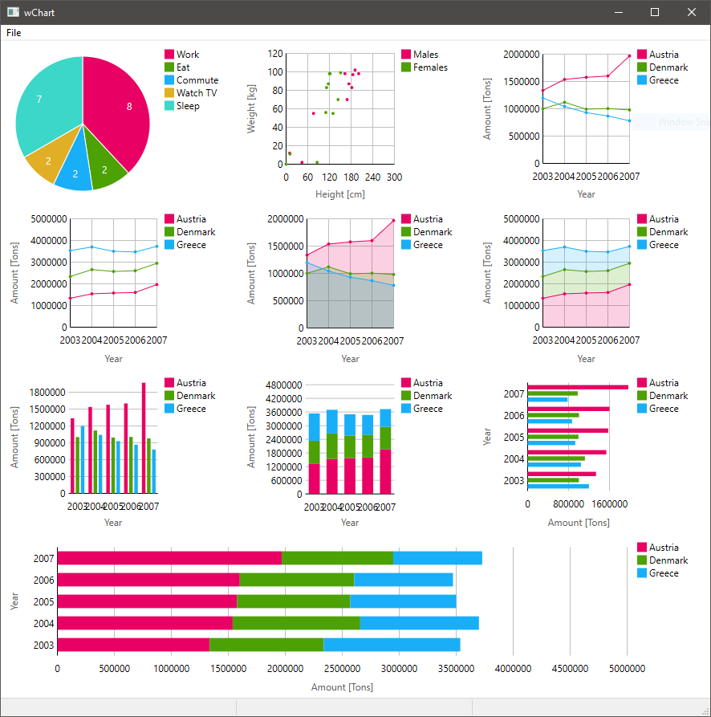

This control allows you to show responsive charts of numerical data.
It requires mCtrl.dll or (64bit mCtrl.dll renamed to) mCtrlx64.dll.
Also requires GDIPLUS.DLL version 1.0 or newer to work correctly (available since Windows 2000 with some Service Packs or updates installed).
| Appearance: |  |
|---|
| Licence: |
|---|
mCtrl.dll/mCtrlx64.dll is covered by the GNU Lesser General Public License 2.1 or (if you choose so) any later version.
| Superclass: | wControl |
|---|
Types
wChart = ref object of wControl
MC_CHDATASET {...}{.bycopy.} = object dwCount*: DWORD piValues*: ptr UncheckedArray[int]
MC_NMCHDISPINFO {...}{.bycopy.} = object hdr*: NMHDR fMask*: DWORD iDataSet*: cint iValueFirst*: cint iValueLast*: cint piValues*: ptr cint
Consts
MC_CHS_PIE = 0x00000000
MC_CHS_SCATTER = 0x00000000
MC_CHS_LINE = 0x00000000
MC_CHS_STACKEDLINE = 0x00000000
MC_CHS_AREA = 0x00000000
MC_CHS_STACKEDAREA = 0x00000000
MC_CHS_COLUMN = 0x00000000
MC_CHS_STACKEDCOLUMN = 0x00000000
MC_CHS_BAR = 0x00000000
MC_CHS_STACKEDBAR = 0x00000000
MC_CHS_TYPEMASK = 0x00000000
MC_CHS_NOTOOLTIPS = 0x00000000
MC_CHS_DOUBLEBUFFER = 0x00000000
MC_CHM_FIRST = 18008
MC_CHM_GETDATASETCOUNT = 18008
MC_CHM_DELETEALLDATASETS = 18009
MC_CHM_INSERTDATASET = 18010
MC_CHM_DELETEDATASET = 18011
MC_CHM_GETDATASET = 18012
MC_CHM_SETDATASET = 18013
MC_CHM_GETDATASETCOLOR = 18014
MC_CHM_SETDATASETCOLOR = 18015
MC_CHM_GETDATASETLEGENDW = 18016
MC_CHM_GETDATASETLEGENDA = 18017
MC_CHM_SETDATASETLEGENDW = 18018
MC_CHM_SETDATASETLEGENDA = 18019
MC_CHM_GETFACTOREXPONENT = 18020
MC_CHM_SETFACTOREXPONENT = 18021
MC_CHM_GETAXISOFFSET = 18022
MC_CHM_SETAXISOFFSET = 18023
MC_CHM_SETTOOLTIPS = 18024
MC_CHM_GETTOOLTIPS = 18025
MC_CHM_GETAXISLEGENDW = 18026
MC_CHM_GETAXISLEGENDA = 18027
MC_CHM_SETAXISLEGENDW = 18028
MC_CHM_SETAXISLEGENDA = 18029
MC_CHN_FIRST = 1073742324
MC_CHN_GETDISPINFO = 1073742324
Procs
proc getDataSetCount(self: wChart): int {...}{.raises: [], tags: [].}
- get the count of datasets
proc deleteAllDataSets(self: wChart): bool {...}{.discardable, raises: [], tags: [].}
- delete all the datasets
proc insertDataSet(self: wChart; index: int; data: openArray[int]): int {...}{.discardable, raises: [], tags: [].}
- inserts a new dataset at specified index
proc deleteDataSet(self: wChart; index: int): bool {...}{.discardable, raises: [], tags: [].}
- delete dataset at index
proc getDataSet(self: wChart; index: int): seq[int] {...}{.discardable, raises: [], tags: [].}
- get dataset at index
proc setDataSet(self: wChart; index: int; data: openArray[int]): bool {...}{.discardable, raises: [], tags: [].}
- replaces the dataset of an already defined index
proc getDataSetColor(self: wChart; index: int): COLORREF {...}{.raises: [], tags: [].}
- gets the color of dataset at index only works when color has been previously set
proc setDataSetColor(self: wChart; index: int; color: COLORREF): bool {...}{.discardable, raises: [], tags: [].}
- set the dataset color at index, accepts wColor
proc getDataSetLegend(self: wChart; index: int; len: int = 500): string {...}{.raises: [], tags: [].}
- get the dataset legend text for specified index. default max character length is 500, this can be set optionally longer text is turncated
proc setDataSetLegend(self: wChart; index: int; text: string): bool {...}{.discardable, raises: [], tags: [].}
- set the dataset legend for given index
proc getFactorExponentX(self: wChart): int {...}{.raises: [], tags: [].}
- get the factor exponant for the X axis
proc getFactorExponentY(self: wChart): int {...}{.raises: [], tags: [].}
- get the factor exponant for the Y axis
proc setFactorExponentX(self: wChart; exponent: int): bool {...}{.discardable, raises: [], tags: [].}
- set the factor exponant for the X axis
proc setFactorExponentY(self: wChart; exponent: int): bool {...}{.discardable, raises: [], tags: [].}
- set the factor exponant for the Y axis
proc getAxisOffsetX(self: wChart): int {...}{.raises: [], tags: [].}
proc getAxisOffsetY(self: wChart): int {...}{.raises: [], tags: [].}
- get Y axis offset
proc setAxisOffsetX(self: wChart; offset: int): bool {...}{.discardable, raises: [], tags: [].}
- set X axis offset
proc setAxisOffsetY(self: wChart; offset: int): bool {...}{.discardable, raises: [], tags: [].}
- set Y axis offset
proc setToolTips(self: wChart; handle: HWND): HWND {...}{.discardable, raises: [], tags: [].}
- assigns a window for tooltip with chart control
proc getToolTips(self: wChart): HWND {...}{.raises: [], tags: [].}
- Get tooltip associated with the control
proc getAxisLegendX(self: wChart; len: int = 500): string {...}{.raises: [], tags: [].}
- get the X axis legend text
proc getAxisLegendY(self: wChart; len: int = 500): string {...}{.raises: [], tags: [].}
- get the Y axis legend text
proc setAxisLegendX(self: wChart; text: string): bool {...}{.discardable, raises: [], tags: [].}
- set X axis legend text
proc setAxisLegendY(self: wChart; text: string): bool {...}{.discardable, raises: [], tags: [].}
- set Y axis legend text
proc plot(self: wChart; name: string; data: openArray[int]; color: varargs[COLORREF]) {...}{. raises: [], tags: [].}
- convinience procedure to set name, dataset and color.
proc mcChart_Initialize(self: wChart) {...}{.cdecl, dynlib: "mCtrl.dll", importc: "mcChart_Initialize".}
proc mcChart_Terminate(self: wChart) {...}{.cdecl, dynlib: "mCtrl.dll", importc: "mcChart_Terminate".}
proc final(self: wChart) {...}{.raises: [], tags: [].}
- Default finalizer for wChart.
proc init(self: wChart; parent: wWindow; id = wDefaultID; pos = wDefaultPoint; size = wDefaultSize; style = 1342177280 or 0x00000000) {...}{.raises: [ NilAccessError, Exception, wCursorError, wBrushError, wError, IndexError, wFontError], tags: [RootEffect].}
- Initializer.
proc Chart(parent: wWindow; id = wDefaultID; pos = wDefaultPoint; size = wDefaultSize; style = 1342177280 or 0x00000000): wChart {...}{.inline, discardable, raises: [ NilAccessError, Exception, wCursorError, wBrushError, wError, IndexError, wFontError], tags: [RootEffect].}
- Constructor, creating and showing a chart control.